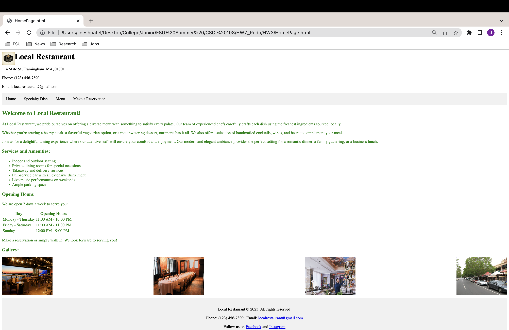
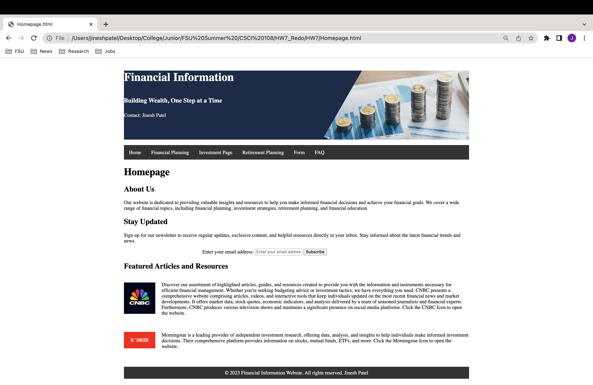

Websites
The restaurant website welcomes visitors to a culinary haven, where they can immerse themselves in a world of flavors and exquisite dining experiences. From the moment they enter the website, they are greeted with captivating visuals, showcasing the restaurant's elegant ambiance and delectable dishes. The menu page offers a tantalizing array of options, each meticulously crafted to satisfy even the most discerning palate. Guests can explore the specialty dish section, where the restaurant proudly presents its signature creations, carefully curated to deliver a unique and memorable gastronomic adventure. With an intuitive reservation system, guests can easily secure their preferred date and time, ensuring a seamless and personalized dining experience that leaves a lasting impression. The restaurant website is a testament to the dedication and passion of the culinary team, inviting visitors to embark on a culinary journey filled with delightful flavors, warm hospitality, and unforgettable moments.
Restaurant Website

[The restaurant website offers a visually captivating and user-friendly online platform to showcase the unique dining experience and delectable offerings of the establishment. With an inviting homepage featuring stunning images of the restaurant's ambiance and mouth-watering dishes, visitors are immediately drawn into the culinary world of the restaurant. The website's navigation menu allows seamless exploration of different sections, including the Specialty Dish page, where the restaurant highlights its signature creations. Each dish is accompanied by enticing images and enticing descriptions, tempting visitors to indulge in the culinary delights offered by the restaurant. The website also includes a well-organized Menu page, featuring an extensive selection of dishes, complete with images, names, descriptions, and prices. This comprehensive overview enables visitors to browse through the diverse offerings and plan their dining experience accordingly. Additionally, the website provides a convenient Reservation page, allowing visitors to book a table online, enhancing the overall customer experience.]
[In addition to its visual appeal and user-friendly interface, the restaurant website aims to provide essential information to visitors. The footer section of the website displays contact details, including the restaurant's address, phone number, and email, ensuring visitors can easily reach out for inquiries or reservations. The inclusion of social media links enables visitors to connect with the restaurant's online presence and stay updated with the latest news and promotions. By combining stunning visuals, informative content, and convenient features like online reservations, the restaurant website strives to create a memorable online experience that entices visitors to dine at the establishment and showcases the restaurant's commitment to exceptional service and culinary excellence.]
Project Website

The financial informative website is a reliable source of knowledge for individuals seeking information and guidance on investment, retirement planning, and savings. The website offers a user-friendly interface that provides valuable insights and resources to help users make informed financial decisions. The investment section covers a range of investment options, providing comprehensive information on stocks, bonds, mutual funds, and real estate. Users can access educational content, expert advice, and tools to assess risks and rewards, empowering them to make investment choices aligned with their financial goals. In the retirement planning and savings section, the website offers retirement calculators, savings tips, and guides to assist users in estimating retirement expenses, creating retirement savings strategies, and implementing effective savings techniques. By equipping users with the necessary knowledge and tools, the website aims to empower individuals to achieve financial security and plan for a comfortable retirement.
The financial informative website focuses on investment, retirement planning, and savings, providing valuable resources to users. The investment section offers insights into various investment vehicles, helping users understand their potential returns and risks. The retirement planning section guides users through the process of estimating retirement expenses, developing retirement savings strategies, and maximizing contributions to retirement accounts. The savings section emphasizes the importance of saving and provides practical tips and techniques to help users build a strong financial foundation. By offering educational content, tools, and guidance, the website enables users to make informed decisions, plan for their financial future, and work towards achieving their long-term financial goals.